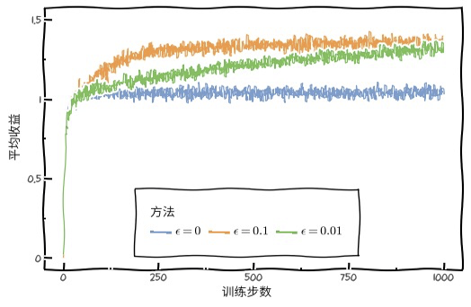

一个赌徒，要去摇老虎机，走进赌场一看，一排老虎机，外表一模一样，但是每个老虎机吐钱的概率可不一样，他不知道每个老虎机吐钱的概率分布是什么，那么每次该选择哪个老虎机可以做到最大化收益呢？这就是多臂赌博机问题 (Multi-armed bandit problem, K- or N-armed bandit problem, MAB
解决MAB问题常用算法
- 朴素选择算法(Naive selection algorithm):其思想是对于每个arm都进行k次实验，选择出平均收益最高的arm。在之后的所有arm选择中都选择这个最好的。
- Epsilon-Greedy算法(\(\epsilon\)-greedy algorithm): 每一轮在选择arm的时候按概率p选择Explore（探索），按概率1-p选择Exploit（历史经验）。对于Explore，随机的从所有arm中选择一个；对于Exploit，从所有arm中选择平均收益最大的那个。
- Softmax算法: 改进版Epsilon-Greedy算法，同样是先选择是Explore（探索）还是Exploit（原有）。对于Exploit阶段，与Epsilon-Greedy算法一致。对于Explore，并不是随机选择arm，而是使用Softmax函数计算每一个arm被选中的概率, \(p(u_{i}) = \frac{e^{u_{i}}}{\sum_{j=0}^{k} e^{u_{j}}}\), \(u_i\)表示第i个arm的平均收益，k是arm总数
- UCB(Upper Confidence Bound)算法：通过实验观察，统计得到的arm平均收益，根据中心极限定理，实验的次数越多，统计概率越接近真实概率。换句话说当实验次数足够多时，平均收益就代表了真实收益。UCB算法使用每一个arm的统计平均收益来代替真实收益。根据arm的收益置信区间的上界，进行排序，选择置信区间上界最大的arm。随着尝试的次数越来越多，置信区间会不断缩窄，上界会逐渐逼近真实值。这个算法的好处是，将统计值的不确定因素，考虑进了算法决策中，并且不需要设定参数。
- 如果arm置信区间很宽（被选次数很少，还不确定），那么它会倾向于被多次选择，这个是算法冒风险的部分
- 如果arm置信区间很窄（被选次数很多，比较好确定其好坏了），那么均值大的倾向于被多次选择，这个是算法保守稳妥的部分。
- UCB是一种乐观的算法，选择置信区间上界排序。如果是悲观保守的做法，是选择置信区间下界(LCB)排序。
\[\begin{equation}\label{eq:ucb1}\begin{split} \mathop{\arg\max}_{i \in k} \ \ \hat{u}_i + \sqrt{\frac{2\ln(t)}{n_i}}\\ \end{split}\end{equation}\]
\[\begin{equation}\label{eq:ucb2}\begin{split} \mathop{\arg\max}_{i \in k} \ \ \hat{u}_i + \sqrt{\frac{(1+ \alpha)\ln(t/\tau(n_i))}{2\tau(n_i)}}\\ \tau(n) = (1 + \alpha)^n \end{split}\end{equation}\] 在公式\(\ref{eq:ucb1}\)中，\(\hat{u}_i\) 表示第i个arm的平均收益，\(t\)是一共尝试arm的次数, \(n_i\)是第i个arm尝试的次数。在公式\(\ref{eq:ucb2}\)中，\(\tau{n_i}\)引入\(\alpha\), 做为超参数控制探索部分的影响。
- Thompson sampling：该算法跟UCB类似，Thompson sampling算法根据arm的真实收益的概率分布来确定所选arm。假设每个臂是否产生收益，其背后有一个概率分布，产生收益的概率为p。不断地试验，去估计出一个置信度较高的概率p的概率分布就能近似解决这个问题了。 假设概率p的概率分布符合beta(wins, lose)分布，它有两个参数: wins, lose。每个臂都维护一个beta分布的参数。每次试验后，选中一个臂，摇一下，有收益则该臂的wins增加1，否则该臂的lose增加1。每次选择臂的方式是：用每个臂现有的beta分布产生一个随机数b，选择所有臂产生的随机数中最大的那个臂去摇。
如下图所示，不同\(\epsilon\)的收益 
以上介绍了5 种针对MAB问题的算法，下面针对这5种算法的优缺点做一个总结分析
| 5种算法 | 优点 | 缺点 |
|---|---|---|
| 朴素选择法 | - | 要求实验次数多，实际场景浪费流量 |
| Epsilon-Greedy算法 | 只关心payoff 没有考虑每个arm的实验次数 | |
| Softmax算法 | - | - |
| UCB(Upper Confidence Bound)算法 | 关注payoff以及实验次数 | |
| Thompson sampling | UCB算法部分使用概率分布（仅置信区间上界）来量化不确定性。而Thompson sampling基于贝叶斯思想，全部用概率分布来表达不确定性 |
LinUCB算法
linUCB算法是在UCB的基础上考虑了更多的上下文信息，具体论文可以参考. LinUCB算法做了一个假设：一个Item被选择后推送给一个User，其回报和相关context成线性关系。于是预测过程就变成：用User和Item的特征预估回报及其置信区间，选择置信区间上界最大的Item推荐，然后依据实际回报来更新线性关系的参数。
首先，我们构建一个线性模型用来描述每个arm的回报\(P_a=\mathbf{\theta D_a}\), \(D_a\)表示针对某个具体的arm的样本，\(b_a\)表示对应的payoff，根据我之前文章的总结，一个线性模型可以套用公式 := - ( ( - )^T + )$，并且我们选择arm的依据应该是其期望回馈最大。这个期望的分布满足： \[\begin{equation}\label{eq:payoffpdf}\begin{split} \mu &= \mathbf{X}_{t, a}^T \hat{\mathbf{\theta}}_a \\ \sigma &= \sqrt{\mathbf{x}_{t, a}^T \mathbf{A}_a^{-1}\mathbf{x}_{t, a}} \end{split}\end{equation}\]
所以我们的目标公式如下 \[\begin{equation}\label{eq:linucb}\begin{split} \mathbf{E}(r_{t, a}|\mathbf{x}_{t, a}) &= \mathbf{X}_{t, a}^T \hat{\mathbf{\theta}_a} \\ a_t &\overset{def}{=} \mathop{\arg\max}_{a \in A_a} \ \ \mathbf{X}_{t, a}^T \hat{\mathbf{\theta}}_a + \alpha\sqrt{\mathbf{x}_{t, a}^T \mathbf{A}_a^{-1}\mathbf{x}_{t, a}} \\ \mathbf{A}_a & = \mathbf{D}_a \mathbf{D}_a^T + \mathbf{I}_d \end{split}\end{equation}\]
其中 \(\alpha\)越大，CI(confidence interval)越宽
线性模型扩展为双线性模型
如果我们把\(\mathbf{X\theta}\) 写成这样的形式 \(a^T\mathbf{\omega}b\), 那么我们就得到一个双线性模型, 双线性模型和线性模型的联系区别可以从下面的公式看出 \[\begin{equation}\begin{split} & \begin{pmatrix} a_0 & a_1 & a_2 &\end{pmatrix} \begin{pmatrix} w_0 & w_1 \\ w_2 & w_3 \\ w_4 & w_5 \end{pmatrix} \begin{pmatrix} b_0 \\ b_1 \end{pmatrix} \\ & \begin{pmatrix} a_0w_0+a_1w_2 + a_2w_4, a_0w_1+a_1w_3+a_2w_5 \end{pmatrix} \begin{pmatrix} b_0 \\ b_1 \end{pmatrix} \\ & \begin{pmatrix} a_0b_0w_0 + a_1b_0w_2 + a_2b_0w_4 + a_0b_1w_1 + a_1b_1w_3 + a_2b_1w_5 \end{pmatrix} \end{split}\end{equation}\]
向量\(a\),\(b\)与\(w\)的对应关系如下 \[ \begin{matrix} \begin{array}{c|c} a_0b_0 & w_0 \\ a_0b_1 & w_1 \\ a_1b_0 & w_2 \\ a_1b_1 & w_3 \\ a_2b_0 & w_4 \\ a_2b_1 & w_5 \\ \end{array}\end{matrix} \]
我们将\(ab\)进行整理 \[ \begin{matrix} a_0\begin{pmatrix} b_0 \\ b_1 \end{pmatrix} \\ a_1\begin{pmatrix} b_0 \\ b_1 \end{pmatrix} \\ a_2\begin{pmatrix} b_0 \\ b_1 \end{pmatrix} \\ \end{matrix} \]
实际等价为\(a\)\(b^t\)向量外积 \[\begin{equation} \begin{pmatrix} a_0 \\ a_1 \\ a_2 \end{pmatrix} \otimes \begin{pmatrix} b_0 & b_1 \end{pmatrix} = \begin{pmatrix} a_0b_0 & a_0b_1 \\ a_1b_0 & a_1b_1 \\ a_2b_0& a_2b_1 \\ \end{pmatrix} \end{equation}\]
基于linUCB在推荐系统冷启动的工程实践
LinUCB算法有一个很重要的步骤，就是给User和Item构建特征，也就是刻画context。在原始论文里，Item是文章，其中专门介绍了它们怎么构建特征的。
原始用户特征：
- 人口统计学：性别特征（2 类），年龄特征（离散成 10 个区间）
- 地域信息：遍布全球的大都市，美国各个州
- 行为类别：代表用户历史行为的 1000 个类别取值
原始文章特征
- URL 类别：根据文章来源分成了几十个类别
- 编辑打标签：编辑人工给内容从几十个话题标签中挑选出来的
- 原始特征向量都要归一化成单位向量。 还要对原始特征降维，以及模型要能刻画一些非线性的关系。 用 Logistic Regression 去拟合用户对文章的点击历史，其中的线性回归部分为:
\[ \phi_u^TW\phi_a \] (眼熟吧 就是一个Bilinear-Model 套上LR训练得到W)
然后基于W将\(\phi_u\)进行投影： \[\psi_u\stackrel{def}{=}\phi_u^\mathrm{T}W\]
然后，用投射后的多维特征对用户聚类，得到 5 个类簇，文章页同样聚类成5 个簇，再加上常数 1，用户和文章各自被表示成 6 维向量(这里应该是到簇中心的概率值)，那么这个6维向量也就是 arm的向量。
看完上述的推导过程，在工程实践中需要仔细考虑如下问题
payoff如何结合业务场景进行定义?
如何构建特征？
如何针对每个arm进行训练？
如何线上inference?
我们一个个来>_<
- payoff的定义可以简化成: 曝光未点击0分，曝光点击1分(当然可以制定更加复杂的业务打分规则)
- \(a\)向量是user侧向量，可以结合实际业务要求选择维度，\(b\)向量是item侧向量，基于LR-Bilinear 模型，将user侧进行映射，聚类后得到最终降维向量(即是论文中的\(x_{t, a}\))
- 通过离线方式训练，每个arm包含 \(D_a\), \(A_a\), \(b_a\), 并保存最终的训练结果\(\theta\)
- 为了在inference时加快，需要针对每个arm缓存一些相关数据 \(A_a\), \(A_a^{-1}\)
- online 更新, 假设某个arm有了新样本\(\mathbf{x} = a^TW\) 和新的payoff \(b\)
\[\begin{equation}\label{eq:online}\begin{split} \mathbf{A}_a & = \mathbf{A}^{\prime}_a + \mathbf{X}\mathbf{X}^T \\ \mathbf{D}_a & = \mathbf{D}^{\prime}_a :+ \mathbf{X} \\ \mathbf{b}_a & = \mathbf{b}_a^{\prime} :+ b \\ \end{split}\end{equation}\]
小结
- 列举了MAB问题的5种解法
- linUCB原理以及工程实现上需要注意的问题
参考: